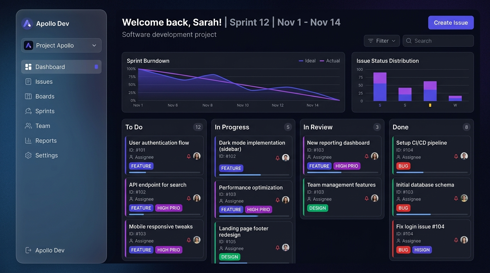

The modern issue tracking platform built for high-velocity engineering teams. Real-time updates, intelligent workflows, and beautiful dashboards — all in one place.
Start Tracking Free
We stripped away the clutter of legacy trackers and built a streamlined, lightning-fast platform.
Built on WebSockets, every ticket update, comment, and status change is reflected instantly across your entire team. No more refreshing pages to see if QA verified your fix.
Auto-assign priorities based on user impact and component tags to keep your backlog pristine.
Visualize your sprints. Drag and drop issues through your custom workflows.
Gain insights into your engineering velocity. Track burndown charts, bug density, and resolution times with our built-in interactive Recharts dashboards.
Log bugs instantly via the web app or our API with full markdown support.
Assign severities, link related issues, and route them to the correct owner.
Engineers push code, and real-time updates keep everyone in the loop.
Close out tickets confidently and watch your sprint burndown chart drop.